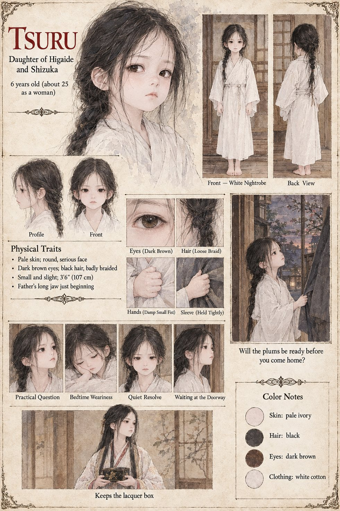

Tsuru
Daughter of Tomobe no Higaide and Shizuka · 6 years old · later a tall woman who keeps the lacquer box
Six years old, put to bed hours before the ordeal and, with the thoroughness of children, not staying there. On the night of the nineteenth of Garren she appears in the doorway of the eastern hall in her nightrobe, her hair half out of its braid, and asks her father, in a voice that tries hard to be that of a girl who has simply come about a practical matter, whether the plums will be ready before he comes home. He kneels and redoes the braid, which he has never been permitted to do and does badly, and says that the jars will be opened at the first frost, as always, and that he will taste the brine himself. She finds this satisfactory. She yawns, in a way that suggests the whole interview was a ruse to be carried to bed, and is asleep before they reach the gallery, her damp small fist closed round the end of his sleeve.
He does not come home. On the fourth of Iverin, at the first frost, she stands in the doorway of the cool north room in her nightrobe and watches her mother taste the brine with her eyes shut, and says nothing. They go north by ox-cart to Fort Shirakane, where her father's cousin takes her onto his shoulders and she sleeps in a corner of the long room under his cloak. In her mother's last weeks in the capital a stooped Examiner corrects a clerk's error: a daughter's name is carried off the Tomobe roll and onto her mother's father's, so that the Bureau's list of the Tomobe disgraced comes at the last to a commander, a captain and a wife, and omits a child. She grows into a tall woman who walks as though the floor owed her something, keeps the lacquer box, and reads every poem in it aloud, with a perfectly straight face, to her own children. The manuscript gives her six years, the braid, the box and the plum tree; the sheet's “about 25 as a woman”, pale ivory skin and white nightrobe are its own.
Appears In

Related Subjects


Related Records

On the night of the nineteenth of Garren, Tomobe no Higaide kneels to redo the braid of his six-year-old daughter Tsuru, which he has never been permitted to do and does badly, while Shizuka waits in the doorway with the lacquer box of his poems.